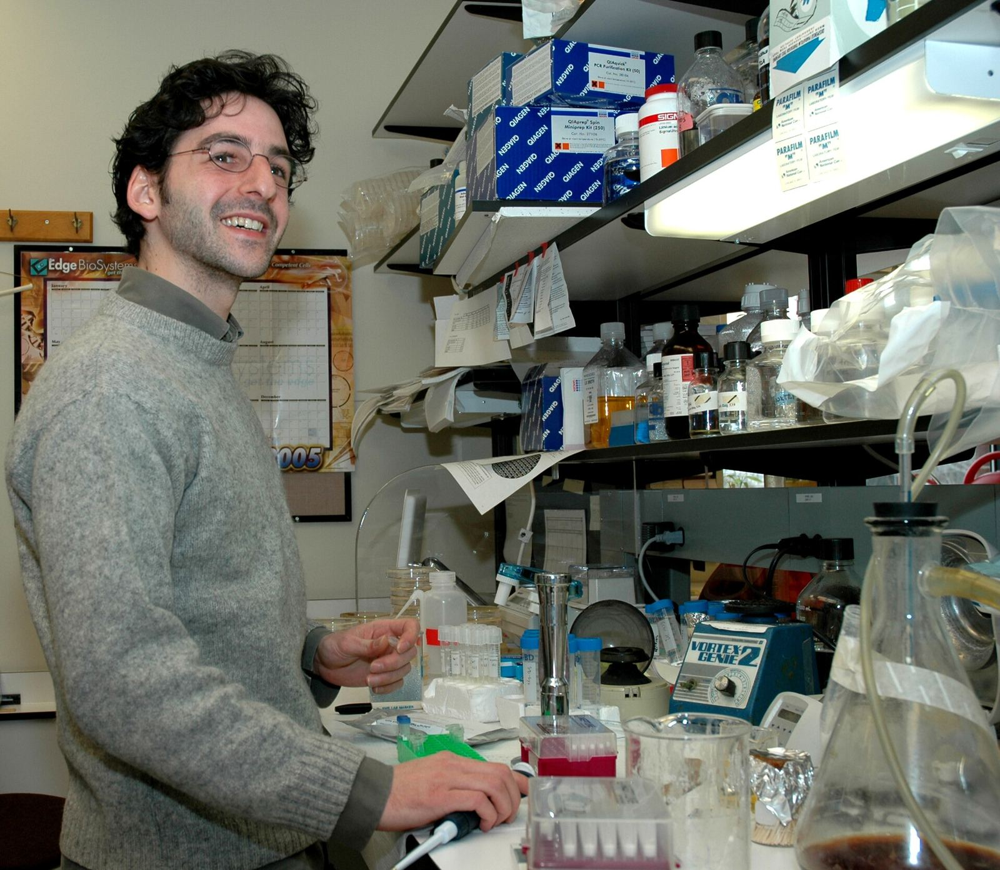

OpenAI 收购药物研发协作平台 Orchestra Bio，团队与技术并入 Rosalind 生命科学业务


OpenAI 10 月 20 日宣布收购 Orchestra Bio——一个帮助生物制药团队协调药物研发流程的平台，并将其团队和技术与 Rosalind（OpenAI 面向生命科学研究的模型与工具）整合。TechCrunch 报道称，交易条款未披露；这家成立四年的初创公司截至 2025 年据报融资约 2000 万美元，投资方包括 Andreessen Horowitz、Atria 和 8VC。
OpenAI 称，在美国，一款新药从靶点发现到获批平均需要约 10 到 15 年；除了科学本身，团队还要在内部部门与外部合作方之间协调项目，往往依赖互不相通的系统。Orchestra Bio 让人和 AI 智能体共同推进药物项目：科学家和项目负责人把研究与实验的监测、跟踪交给智能体。OpenAI 举例说，一批生产失败可能推迟临床试验启动，Orchestra 的智能体可帮助识别受影响的活动和时间表、收集相关信息并比较应对方案。
科学家和项目负责人把研究与实验的监测、跟踪交给智能体。
Rosalind 产品线包括帮助科学家推理生物与化学问题的 GPT‑Rosalind，以及连接科学工具和数据、协助分析结果和规划实验的 Rosalind Workbench。OpenAI 提到与诺和诺德、Moderna 的合作；本站 10 月 15 日曾摘记其 Rosalind Academic Plan。TechCrunch 评论称，这是大型 AI 实验室为制药等大行业开发越来越多软件的典型例子。
来源
摘记，不是官方媒体。交易金额未披露；融资额为 TechCrunch 引述的此前报道。